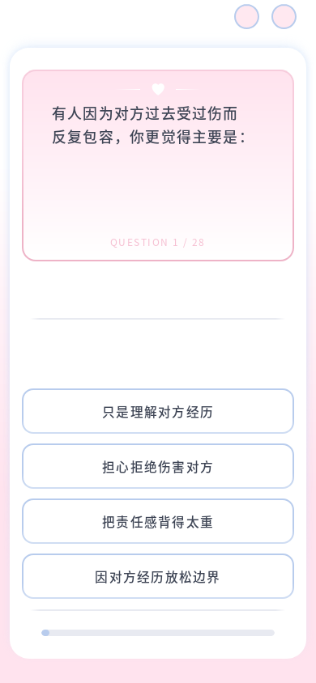
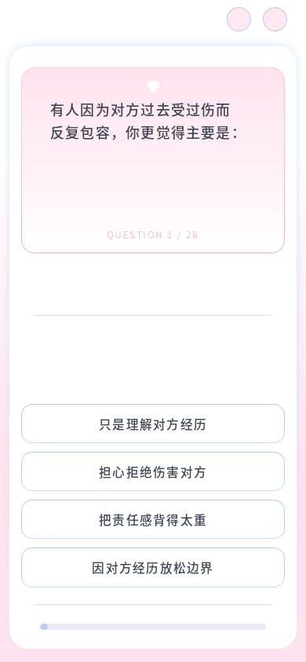
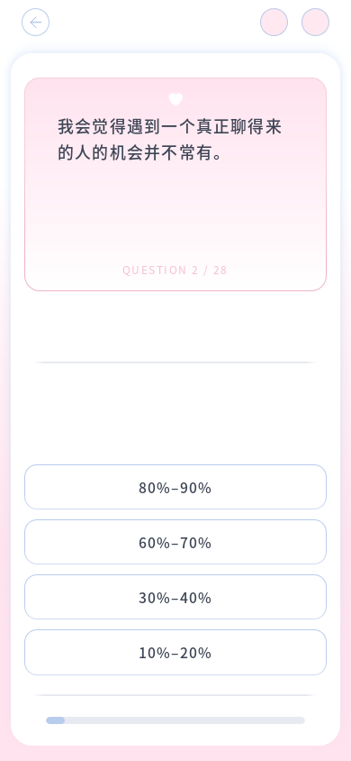

2026-10-12 · 本地 Firefox · 修改前后固定 C10，尺寸为 CSS 像素。点击图片查看原图。


下图为真实选择第四个选项进入第二题后的界面。实测四个圆圈宽高均约 31.10px，顶边均约 9.20px，原生边框均为 1px；左侧返回、右侧关于和关于页返回均通过真实鼠标点击。

十种视口 × 全部 96 道题，共 960 组前后比较通过；最大位移误差为 0.1400px。下表取 C10。
| CSS 视口 | 中线中心下移 | 选项组底边下移 | 进度条下移 | 右上圆圈下移 | 按钮高度（新 / 原） | 粉色留白 |
|---|---|---|---|---|---|---|
| 320 × 572 | 5.70px | 5.72px | 11.43px | 2.87px | 50.40 / 56.00px | 17px |
| 360 × 640 | 6.40px | 6.40px | 12.80px | 3.20px | 50.40 / 56.00px | 17px |
| 375 × 667 | 6.67px | 6.67px | 13.33px | 3.33px | 50.40 / 56.00px | 17px |
| 390 × 844 | 8.42px | 8.43px | 16.87px | 4.22px | 50.40 / 56.00px | 17px |
| 430 × 932 | 9.32px | 9.32px | 18.63px | 4.67px | 50.40 / 56.00px | 17px |
| 768 × 1024 | 10.22px | 10.23px | 20.47px | 5.12px | 50.40 / 56.00px | 17px |
| 1440 × 900 | 9.00px | 9.00px | 18.00px | 4.50px | 50.40 / 56.00px | 17px |
| 844 × 390 | 3.88px | 3.90px | 7.80px | 1.95px | 50.40 / 56.00px | 17px |
| 899 × 900 | 9.00px | 9.00px | 18.00px | 4.50px | 50.40 / 56.00px | 17px |
| 900 × 899 | 8.98px | 8.98px | 17.97px | 4.50px | 50.40 / 56.00px | 17px |
CSS 使用统一的高度、间距、描边和圆圈变量；额外空间由 Grid 的弹性轨道吸收。布局脚本读取整组选项的自然高度与边框基准，保留原 DOM ID、答题存储及跳转接口，没有写入题目专属坐标或固定按钮高度。阴影的不可见外延被限制在 17px 留白内，避免额外滚动条。
逐题比较 · 完整答题 · 浏览器缩放 · 高视口、大字号与其他页面 · 真实点击与圆圈测量 · 题库哈希 · 验证摘要